전자상거래운용사 (2012-09-16 기출문제)
1과목: 인터넷 일반
1. 다음은 무엇에 대한 설명인가? (5점)
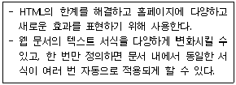
- DHTML
- CSS
- ASP
- JavaScript
(정답률: 58%)

2. 다음 중 인터넷에 대한 설명으로 가장 거리가 먼 것은? (5점)
- 인터넷 관련 기술의 비약적인 발전으로 문자 뿐만 아니라 그림, 음영, 동영상 등의 멀티미디어 자료도 쉽게 교환할 수 있다.
- 인터넷 커뮤니케이션은 일대일 커뮤니케이션이 가장 커다란 특징이자 인터넷의 최대 장점이다.
- 인터넷에 접속한 컴퓨터들은 기종에 관계없이 표준화된 규약에 따라 상호 접속이 가능하다.
- 인터넷은 물리적인 거리나 국가에 상관없이 전세계의 누구와도 정보 교환이 가능하다.
(정답률: 75%)
3. 다음 중에서<IMG> 태그와 속성에 대한 설명으로 잘못된 것은? (5점)
- Border: 그림 테두리 굵기 지정
- Vspace: 그림 상하와 글자간의 간격 지정
- Align: 그림 옆 글자 위치 지정
- Size: 그림의 크기를 지정
(정답률: 40%)
4. 다음 중에서 LAN을 이용하여 인터넷을 접속하기 위해 필요한 설정으로 가장 거리가 먼 것은? (5점)
- IP 주소
- Domain Name
- DNS 서버 주소
- Gateway 주소
(정답률: 62%)
5. 다음은 무엇에 대한 설명인가? (5점)
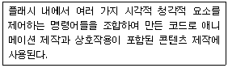
- 액션스크립트
- 액티브X
- 스트리밍
- 안티앨리어싱
(정답률: 46%)
6. 다음 중에서 URL(Uniform Resource Locator)의 사용 예로서 적절하지 않은 것은? (5점)
- http://www.korcham.net:8080
- ftp:ftp.korham.net
- http://104.195.110.101/~korcham
- mailto:master@korcham.net
(정답률: 47%)
7. 다음 중에서 문서의 특정 위치에 표식을 달아두고 찾아갈 수 있도록 하기 위한 책갈피 기능을 사용하기 위해 찾아갈 책갈피의 위치를 설정하는 태그로 올바른 것은? (5점)
- <a name="bookmark"></a>
- <a name="#bookmark"></a>
- <a href="bookmark"></a>
- <a href="#bookmark"></a>
(정답률: 25%)
8. 다음 중에서 자바스크립트를 작성할 때 주의할 점으로 잘못된 것은? (5점)
- 대소문자를 구분하여 사용한다.
- 객체, 속성, 메소드의 구분은 마침표(.)를 사용한다.
- 따옴표 자체를 문자열에 포함시켜야 할 경우에는 역슬래시(?)와 따옴표를 함께 사용한다.
- 문자열을 표시할 때는 큰따옴표(")만 사용할 수 있다.
(정답률: 29%)
9. 다음 중에서 개인정보 오남용 피해를 예방하기 위한 방법과 가장 거리가 먼 것은? (5점)
- 비밀번호는 타인이 유추하기 어렵도록 영문과 숫자 등을 조합하여 충분히 길게 설정한다.
- 자신이 가입한 사이트의 비밀번호를 잊지 않도록 하기 위하여 같은 아이디로 가입한 모든 사이트는 같은 비밀번호를 사용한다.
- 타인이 자신의 명의로 신규 회원가입 시 즉각 차단하고 이를 통지받을 수 있도록 명의도용 확인 서비스를 이용한다.
- 인터넷에 자료를 올린 경우 개인정보가 포함되지 않도록 주의하며, P2P로 제공되는 자신의 공유 폴더에는 개인정보 파일이 저장되지 않도록 한다.
(정답률: 66%)
10. 다음 중에서 보통의 HTML로 구현할 수 없는 ASP만의 기능에 대한 설명으로 잘못된 것은? (5점)
- 사용자에 대한 정보를 피드백하여 해당 사용자에 맞는 정보를 보내준다.
- 웹페이지 상에서 데이터베이스의 내용을 보여주고, 그 안에 존재하는 데이터도 조작한다.
- 특정 사용자의 구미에 맞는 것만 보여줄 수 있도록 구현된 페이지를 만든다.
- 이미지나 동영상들을 사용자에게 보여주는 페이지를 만든다.
(정답률: 54%)
11. 다음 중에서 개인정보와 관련된 설명으로 잘못된 것은? (5점)
- 개인정보란 사람의 성명, 주민등록번호 등에 의하여 생존하고 있는 특정한 개인을 알아볼 수 있도록 하는 부호, 문자, 음성, 음향 및 영상 등의 정보를 말한다.
- 개인정보 유출이란 개인이 동의하지 않은 정보를 무단으로 가져가는 행위를 말한다.
- 개인정보에 접근할 수 있는 회사차원 또는 내부자가 금전적인 이득을 취하기 위해 은밀하게 판매하는 문제가 발생하기도 한다.
- 개인에 관한 정보 중에서 식별가능성이 없는 정보도 개인정보에 포함된다.
(정답률: 58%)
12. 다음의 예제에 나오는 ASP 스크립트를 실행시켰을 때 출력되는 값의 순서를 올바르게 나열한 것은? (5점)
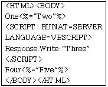
- One Two Three Four Five
- One Three Four Two Five
- One Three Four Two Five
- One Two Four Five Three
(정답률: 30%)
13. 다음 중에서 사용자 질의를 규모가 큰 여러 검색엔진으로 보낸 후 검색 결과를 받아 사용자에게 제시하는 검색 방법은 무엇인가? (5점)
- 키워드 검색
- 메타 검색
- 통합 검색
- 디렉토리 검색
(정답률: 50%)
14. 다음은 HTML에 대한 설명이다. 아래의 설명 중 맞는 것은? (5점)
- 글자의 색상을 녹색으로 지정하는 방법은 text="#ff00ff"이다.
- 특수문자인 “>”를 표현하는 방법은 <이다.
- 표의 테두리 선의 굵기를 지정하는 명령어는 MARGINWIDTH로 생략하면 기본 값이 0이다.
- SRC는 삽입할 그림의 위치를 지정하거나 프레임에 삽입할 파일 이름을 지정할 때 사용된다.
(정답률: 58%)
15. 다음 중에서 정보검색과 관련된 용어의 설명으로 올바르지 않은 것은? (5점)
- Leakage : 정보검색의 대상임에도 불구하고 검색 결과 중에서 누락된 정보
- Stop word : 검색엔진이 데이터베이스를 구축할 때 색인에서 제외하는 단어나 문자열
- Garbage : 검색 결과에서 생성된 불필요한 정보
- Theasaurus : 일부 웹 저작자들이 위치와 빈도를 높이기 위해 한 페이지 내에 같은 키워드를 반복하여 수십 개씩 입력하는 것
(정답률: 55%)
16. 다음 중에서 <INPUT>태그를 이용하여 사용자로부터 입력을 받을 때 Type 속성으로 사용할 수 없는 것은? (5점)
- RADIO
- PASSWORD
- SELECT
- RESET
(정답률: 35%)
17. 다음 중에서 웹페이지 제작에 사용되는 WYSIWYG 프로그램이 아닌 것은? (5점)
- 프론트페이지
- 드림위버
- 에디트플러스
- 나모웹에디터
(정답률: 27%)
18. 다음 보기 중 인터넷의 역기능으로 올바른 것은 무엇인가? (5점)
- 익명성
- 개인 프라이버시의 침해
- 지역성
- 비대면성
(정답률: 58%)
19. 웹문서를 다양하게 설계하고 보다 자유롭게 편집하기 위해 만들어진 CSS에 대한 설명으로 옳지 않은 것은? (5점)
- 하나의 문서만 수정해도 한꺼번에 여러 페이지의 서식을 수정할 수 있다.
- 같은 스타일시트를 사용하는 문서에는 문서 전체의 일관성을 쉽게 유지할 수 있다.
- 웹페이지의 레이아웃 편집을 강화하여 브라우저와 플랫폼의 종류에 따라 사용 방법에 차이가 많다.
- 스타일시트에서 글꼴, 색상, 크기, 정렬방식 등을 미리 지정하여 필요한 곳에 적용할 수 있다.
(정답률: 66%)
20. 다음 중에서 인터넷 익스플로러에서의 인터넷 옵션에 대한 설명으로 잘못된 것은? (5점)
- 하나 이상의 사이트를 홈 페이지로 지정할 수 있다.
- 이전에 방문한 웹 사이트에 로그인하면 자동으로 채워지는 암호를 삭제할 수 있다.
- 등급을 사용하여 컴퓨터에서 볼 수 있는 인터넷 콘텐츠를 제한할 수 있다.
- 열어본 페이지 목록을 이용하여 나중에 빨리 볼 수 있도록 웹페이지, 이미지 및 미디어 복사본을 저장할 수 있다.
(정답률: 38%)
2과목: 전자상거래 일반
21. 다음 내용들은 '실시간 기업(RTE : real-time enterprise)'에 대한 특징들을 설명하고 있다. 이 중 잘못 기술된 문항을 고르시오. (4점)
- 데이터가 수집되고 형성되는 동시에 이를 필요로 하는 곳으로 곧바로 전송된다.
- 조직의 의사결정 프로세스 중 '지연시간'을 최소로 줄이고자 하는 철학을 갖고 있다.
- 고객세분화 및 고객분석을 통해 고객에 대한 이해도를 높이고자 노력한다.
- 프로세스 상에서 발생하는 지연시간을 줄이기 위해 '병목공정(bottleneck process)'을 분석하여 지체시간을 줄이려 노력한다.
(정답률: 60%)
22. 다음 중 MRO 자재에 대한 개념을 올바르게 정의한 문항을 고르시오. (4점)
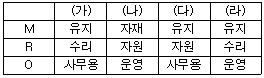
- 가
- 나
- 다
- 라
(정답률: 41%)
23. 다음 내용을 읽고 ( )안에 들어갈 가장 적합한 용어를 고르시오. (4점)
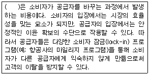
- 전환비용(switching cost)
- 기회비용(opportunity cost)
- 매몰비용(sunk cost)
- 관련원가(relevant cost)
(정답률: 67%)
24. 다음에 열거되는 내용 중 '전자상거래 시대에 대두되는 특징'으로 부적절한 것은 무엇인가? (4점)
- 규모의 경제를 추구한다.
- 지식 기반 경쟁이 심화된다.
- 수확체증의 법칙이 경영원리로 자리 잡는다.
- 전략적 제휴가 활발해진다.
(정답률: 40%)
25. 다음 내용은 전자지불 방식의 한 예를 설명하고 있다. 이 방식의 명칭을 문항에서 고르시오. (4점)
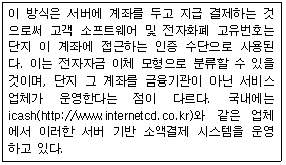
- IC카드형 전자화폐 시스템
- 가상계좌 지급결제 시스템
- 네트워크형 전자화폐 시스템
- 전자수표 시스템
(정답률: 35%)
26. 다음 내용은 전통적인 마케팅에 비해 인터넷마케팅이 갖는 '단점'을 설명하고 있다. 이 중 잘못 기술된 내용만으로 묶인 문항을 고르시오. (4점)
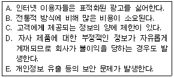
- A, B
- B, C
- C, D
- D, E
(정답률: 52%)
27. 다음 내용은 전자화폐의 문제점을 기술한 것이다. 이 중 잘못 기술된 문항을 고르시오. (4점)
- 거의 완전한 익명성을 확보할 수 있기 때문에 범죄에 이용될 우려가 매우 높다.
- 전통적인 신용카드에 비해 이용자의 프라이버시를 지키기가 어렵다.
- 양도성(유통성)을 갖추고 있는 것이므로 금융 행정당국에 의한 현금의 흐름제어가 곤란할 수 있다.
- 안정성을 확보하고 운용비용을 줄이기 위해 유효기간이 정해져 있다.
(정답률: 40%)
28. 다음 중 기업에서 일대일 마케팅(one-to-one marketing) 을 수행하는 목적으로 부적절한 문항을 고르시오. (4점)
- 관계마케팅을 통해 시장점유율을 높이기 위한 목적을 갖고 있다.
- 고객의 충성도(loyalty)를 높여준다.
- 기업으로 하여금 어떤 고객이 가치가 있는지를 파악할 수 있도록 해준다.
- 마케팅 비용이 절감된다.
(정답률: 31%)
29. 다음 내용 중 Mykey 교수가 제안한 '물류의 7원칙'에 포함되지 않는 문항을 고르시오. (4점)
- 적절한 상품을 (right commodity)
- 적절한 인력에 의해 (right person)
- 적절한 시기에 (right time)
- 적절한 가격에 (right price)
(정답률: 75%)
30. 다음 중 인터넷에서 광고로 인하여 발생한 판매액에 비례하여 광고비를 책정하는 방식을 지칭하는 지표는 무엇인가? (4점)
- CPC(cost per click-thru)
- CPT(cost per transaction)
- CPP(cost per purchase)
- CPM(ccost per mille)
(정답률: 42%)
31. 공급망관리(SCM; supply chain management)를 성공적으로 수행하기 위한 요인으로 부적절한 문항을 고르시오. (4점)
- 공급사슬 전체의 길이를 단축시키려 노력한다.
- 재고를 최소화하고 신속한 납기체제를 유지한다.
- 공급사슬을 이루는 조직간의 불필요한 혼선을 피하기 위해 공급 관련 정보를 보안에 부친다.
- 리드타임이 최소화되도록 시스템이 설계되어야 한다.
(정답률: 48%)
32. 인터넷 사용자의 하드 디스크에 그 사용자를 인식할 수 있는 정보를 저장하여 고객의 행동에 대한 프로파일을 구축하는 데 이용되는 기술을 지칭하는 용어는 무엇인가? (4점)
- 쿠키(cookies)
- 페이지 뷰(page view)
- 히트수(hits)
- 세션(session)
(정답률: 60%)
33. 인터넷 혁명과 함께 모든 기업이 변화에 대응하여 생존하려는 전환 노력을 특히 e-전환(e-transformation)이라 한다. 다음 중 e-전환의 특징으로 볼 수 없는 문항을 고르시오. (4점)
- ERP(전사적 자원관리)를 통한 기업 경영의 효율화 추구
- 구매관리시스템(e-procurement)의 온라인화
- e-마켓플레이스를 글로벌 네트워크 구축으로 대체
- 제품 및 프로세스의 글로벌 표준화
(정답률: 46%)
34. 다음은 인터넷 설문조사의 장점을 열거한 것이다. 이 중 설명이 가장 부적절한 문항을 고르시오. (4점)
- 전통적인 설문지법에 비해 조사 비용이 저렴하다.
- 전통적인 설문지법에 비해 응답 속도가 빠르다.
- 전통적인 설문지법에 비해 응답자의 무작위 추출(random sampling) 가능성이 높아진다.
- 응답자가 편리한 시간대에 설문조사에 응할 수 있다.
(정답률: 68%)
35. 다음 문항 중 비즈니스 프로세스의 통합 또는 효과적인 워크플로우(workflow) 구축과는 달리, 분석적 관점(analytic view)이 강조되는 시스템 또는 솔루션은 무엇인가? (4점)
- 자재소요계획(MRP; material request planning)
- 전사적 자원관리(ERP; enterprise resource planning)
- 공급망 관리(SCM; supply chain management)
- 데이터마이닝(data mining)
(정답률: 60%)
36. 다음에서 설명하는 물류관리 방식이 무엇인지를 문항에서 고르시오. (4점)
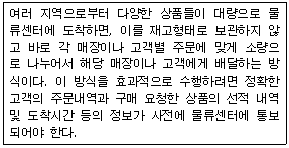
- 바코드 시스템(Bar Code System)
- 크로스 도킹(Cross Docking)
- JIT(Just-in-Time)
- QR(Quick Response)
(정답률: 52%)
37. 다음 중 인터넷 고객관리 및 전략 수립에 일반적으로 사용되는 STP의 첫 번째 단계에서 수행하는 활동은 무엇인가? (4점)
- 시장이나 고객을 단일 시장으로 표준화(standardization)한다.
- 시장이나 고객을 탐색(search)하여 자사에 유리한 표적시장을 선정한다.
- 시장이나 고객을 기업에서 유리한 소수의 집단으로 단순화(simplification)한다.
- 시장이나 고객을 세분화(segmentation)한다.
(정답률: 36%)
38. 다음에서 설명하는 개념을 읽고 ( ) 안에 들어갈 적합한 용어를 문항에서 고르시오. (4점)
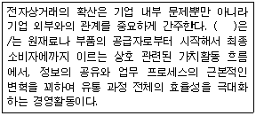
- ERP(enterprise resource planning)
- CRM(customer relationship management)
- SCM(supply chain management)
- BPM(business process management)
(정답률: 59%)
39. 다음 내용은 전자상거래에서 나타나는 특징들을 항목별로 설명한 것이다. 설명이 부적절한 문항을 고르시오. (4점)
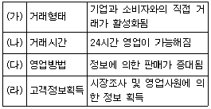
- 가
- 나
- 다
- 라
(정답률: 57%)
40. 다음 중 마케팅 전략 수립 단계의 초기에 사용하는 SWOT 분석에서 분석의 대상으로 가장 적절한 문항을 고르시오. (4점)
- 한 기업에 내포되어 있는 기회와 위협, 그리고 경쟁자의 강약점을 분석 대상으로 한다.
- 기업의 외부 환경에서 비롯되는 기회와 위협, 그리고 기업 내부의 강약점을 분석 대상으로 한다.
- 기업 내부에 존재하는 기회와 위협, 그리고 외부환경에 대응할 수 있는 강약점을 분석 대상으로 한다.
- 경쟁자의 기회와 위협, 그리고 이에 대응하는 기업 내부의 강약점을 분석 대상으로 한다.
(정답률: 52%)
3과목: 컴퓨터 및 통신 일반
41. 마이클 포터(M. Porter)는 기업의 가치사슬을 직접 가치를 창출하는 '주활동(primary activity)'과 이주활동을 지원하는 '지원활동(support activity)' 으로 구분하고 있다. 다음 중 주활동에 해당되는 기능은 무엇인가? (5점)
- 유입물류
- 인적자원관리
- 기술개발
- 기업 하부구조
(정답률: 20%)
42. 인터넷 비즈니스 모델 중에서 검색엔진, 사업중개, 투자자문 등의 서비스를 제공하는 사업 모델은 어느 것인가? (5점)
- 가치사슬 부가서비스 모델(value chain service providers model)
- 가치사슬 통합 모델(value chain integrators model)
- 공동 플랫폼 모델(collaboration platforms model)
- 정보 중개 모델(information brokerage model)
(정답률: 29%)
43. 다음 내용은 전통적인 상거래 방식에 비해 인터넷 기반의 전자상거래가 갖는 특징을 설명한 것이다. 잘못 기술된 문항을 고르시오. (5점)
- 상대적으로 유통채널이 짧아진다.
- 판매거점이 없이도 상거래가 가능하다.
- 고객정보의 획득이 용이하다.
- 대규모 자금이 투입되어야 하므로 신규 경쟁자의 진출이 어렵다.
(정답률: 64%)
44. 다음 중 인터넷 비즈니스 모델의 성립 요건으로 볼 수 없는 문항은 무엇인가? (5점)
- 거래에 관련된 당사자들 각각이 수행해야 할 역할
- 상품, 서비스, 정보의 흐름을 나타내는 아키텍쳐
- 거래에 참가하는 당사자들에게 주어지는 편익
- 홈페이지 구축을 위한 논리적 구조도
(정답률: 44%)
45. 저가격, 극소형 센서의 입출력을 센서 네트워크를 활용하여 제어함으로써 환경 조절, 자동제어, 원격감지 등에 사용할 수 있는 네트워크를 무엇이라고 하는가? (6.25점)
- RFID
- USN
- IMT-2000
- ISDN
(정답률: 32%)
46. 해커로부터의 패스워드보안을 위하여 강화해야 할 정책 중 옳지 않은 것은? (6.25점)
- 최소 7자 이상의 문자와 숫자를 혼합하여 사용한다.
- 여러 개의 패스워드는 한데 모아서 기록 후 가급적 이동저장장치에 보관한다.
- 영어단어를 포함하는 패스워드는 사용하지 않도록 한다.
- 잘못된 로그온을 계속해서 시도하는 경우 사용자계정을 잠그고 로그로 남기도록 한다.
(정답률: 48%)
47. 윈도우즈 2000서버에서 감사(Audit)에 사용할 수 있는 이벤트의 범주를 나열한 것 중 옳지 않은 것은? (6.25점)
- 계정로그온이벤트, 계정관리, 디렉토리서비스액세스
- 포맷, 계정감시, 메모리 할당
- 로그온 이벤트, 개체 액세스, 정책변경
- 권한사용, 프로세스 추적, 시스템이벤트
(정답률: 45%)
48. 다음 UTP 케이블의 분류에 따라 사용주파수, 전송속도 및 용도에 대하여 설명한 것 중 올바른 것은? (6.25점)
- Category1 - 음성주파수 - 1Mbps - 음성전화망
- Category2 - 16Mhz - 10Mbps - Multi pair통신케이블
- Category3 - 100Mhz - 100Mbps - 전화망 및 기본데이터망
- Category4 - 200Mhz - 200Mbps - 디지털전화망 및 고속전산망
(정답률: 32%)
49. 네트워크 공격에서 가장 먼저 수행하는 정보수집단계에 포함되지 않는 것은 무엇인가? (6.25점)
- 시스템 및 서비스 탐지
- OS탐지
- 네트워크토폴로지/파이어 월 필터링 규칙탐지
- 백도어
(정답률: 60%)
50. 인터넷 프로토콜 중 IPv4와 IPv6에 대한 설명이 올바른 것은 무엇인가? (6.25점)
- IPv4 - 32Byte의 주소공간으로 구성된다.
- IPv6 - 128Byte의 주소공간으로 구성된다.
- IPv4 - 주소공간을 4개의 클래스로 나누어 운영한다.
- IPv6 - IPsec 와 같은 보안프로토콜을 상위계층에서 별도로 운영하도록 한다.
(정답률: 50%)
51. 서버가 갖는 기능과 이에 해당되는 서버의 종류를 잘못 짝지은 것은? (6.25점)
- 데이터베이스 - SQL Server
- 운영체제 - Linux Server
- 보안 - DNS Server
- 통신 - Web Server
(정답률: 68%)
52. 다음 인터넷 프로토콜에 대한 설명 중 옳지 않는 것은? (6.25점)
- RTSP - 실시간 스트리밍 프로토콜
- HTTP - 하이퍼텍스트 전송 프로토콜
- IGMP - 인터넷 그룹관리 프로토콜
- RTP - 실시간 텔레비전 프로토콜
(정답률: 67%)
53. PC의 하드웨어 장치 중 데이터가 이동하는 버스에 해당하지 않는 것은? (6.25점)
- AGP 버스
- ISA 버스
- CMOS 버스
- PCI 버스
(정답률: 43%)
54. ICMP(Internet Control Message Protocol)의 Redirect 메시지 형식에 포함되지 않는 것은? (6.25점)
- 메시지 유형(Message Type)
- 체크섬(checksum)
- 라우터 인터넷 주소
- 원래의 IP 데이터그램 암호화 방법
(정답률: 47%)
55. 언어번역 프로그램과 관련된 내용 중 틀린 것은? (6.25점)
- 어셈블러 : 기계명령어와 절대주소에 기호를 부여한 언어를 입력으로 받아들여서 목적프로그램을 생성하는 번역기이다.
- 인터프리터 : 고급언어로 작성된 원시프로그램을 한문장씩 번역하여 즉시 실행하는 번역기 이다.
- 컴파일러 : 고급언어로 된 프로그램 모듈전체를 번역하여 목적프로그램을 생성하는 번역기이다.
- 링커 : 서로 독립적으로 번역된 여러 원시프로그램을 결합하여 하나의 실행 가능한 모듈로 만들어 주는 번역기이다.
(정답률: 30%)
56. 다음은 무엇에 대한 설명인가? (6.25점)
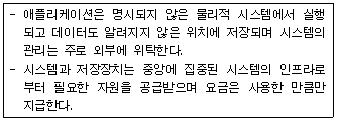
- 클라우드 컴퓨팅
- 분산 OS
- 클라이언트/서버 시스템
- 유비쿼터스
(정답률: 34%)
57. 이동통신에서 경로손실과 반사,회절,산란 등으로 인하여 송신층에서 보낸 신호가 약화되는 현상을 무엇이라고 하는가? (6.25점)
- 샘플링(sampling)
- 페이딩(fading)
- 디코딩(decoding)
- 캐스팅(casting)
(정답률: 67%)
58. 메모리 상에서 페이지교체 알고리즘의 종류 및 이에 관한 설명 중 틀린 것은? (6.25점)
- 최적 페이지교체 알고리즘 : 실제구현이 불가능하며 가장 큰 레이블을 갖는 페이지를 교체한다.
- NRU(Not Recently Used) : 페이지 폴트가 발생하면 페이지를 분류하기 위해 지정한 4개 클래스의 순서에 따라 교체한다.
- FIFO(First-In First-Out) : 가장 마지막 페이지가 우선적으로 교체된다.
- LRU(Least Recently Used) : 페이지폴트가 발생하면 가장 최근에 사용하지 않은 페이지를 교체한다.
(정답률: 67%)
59. 유비쿼터스 사회의 진입에 따른 사회적 역기능에 대한 설명으로 가장 적절하지 않은 것은 무엇인가? (6.25점)
- 유비쿼터스 감시사회의 강화
- 개인적인 정보침해의 확대
- 새로운 유형의 바이러스 등장에 따른 해킹의 감소
- 사이버 윤리의 훼손
(정답률: 67%)
60. DDoS(분산서비스거부) 공격으로 발생할 수 있는 문제점으로 잘못 설명한 것은? (6.25점)
- 시스템 디스크 용량 초과로 인한 시스템 손상과 마비
- 시스템 메모리 할당 초과로 인한 시스템 마비
- 시스템 프로세스의 활성화 증가로 인한 시스템 마비
- 시스템 파일의 이름변경에 의한 시스템 마비
(정답률: 59%)